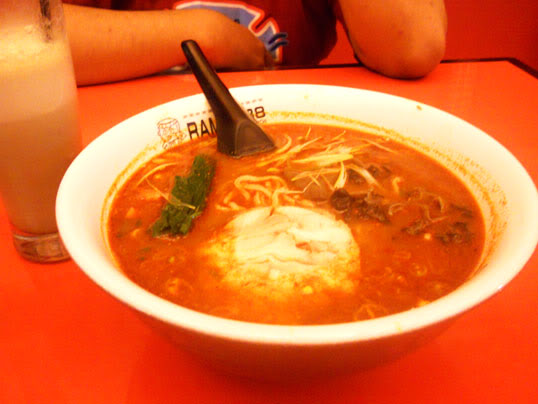

Jigoku ramen adalah salah satu produk andalan dari restoran Ramen 38 (Ramen Sanpachi). Coba bayangkan sebuah ramen dengan nama jigoku (terjemahan: neraka). Ramen dari neraka, apa yang anda pikirkan? Jika memikirkan sebuah ramen yang sangat pedas, berarti pikiran anda berada pada jalur yang lurus dan benar. Kita bisa memilih tingkat (level) kepedasan dari jigoku ramen. Level 1 artinya 1 buah cabai rawit dan 1 sendok serbuk cabai.
Jigoku ramen level 6 memiliki tampilan kuah gelap kemerah-merahan dilengkapi dengan irisan cabai. Bau dan penampakannya saja sudah terasa pedas. Saya langsung mencicipi kuahnya, “hmm… cukup, tidak terlalu pedas”. Tetapi setelah sesuap – dua suap pedasnya mulai terasa. Air mata dan keringat mulai menetes meski ruangan cukup dingin. Wow, sangat pedas!!! Setiap suapan mie tidak pernah luput dari irisan cabai, ditambah kaldu super pedas. Kecepatan makan menurun drastis. Jantung berdegup kencang. Saya harus berhenti setiap suapan untuk mengambil nafas (Red: halah lebay…). Biasanya saya selesai terlebih dahulu lalu mencomot jatah istri. Kali ini istri mendahului saya.

Untuk persiapan anti pedasnya, saya memesan minuman Matcha Ole (rasanya seperti milkshake greentea tanpa ice cream) dan Kaki Gouri (es serut dengan toping sirup dan susu). Saya pernah baca artikel bahwa susu efektif untuk menghilangkan pedas. Dan kedua menu tersebut memang mujarab untuk menghilangkan rasa pedasnya. Rasa pedas (di lidah) berkurang drastis setelah menikmati minuman dan dessert tersebut. Saya adalah penggemar pedas. Tetapi setelah mencoba jigoku ramen dan sudah kewalahan di level 6, saya harus memikirkan kembali pernyataan tersebut. Lain kali saya akan memesan level 3 saja. Pupus sudah harapan foto dipajang di dinding restoran Ramen 38 (pemegang rekor jigoku ramen level tertinggi akan dipajang fotonya). Jika kita memesan jigoku ramen dengan level 1-10 tidak dikenakan biaya tambahan. Sedangkan level 11 keatas dikenakan biaya tambahan per kenaikan level. Bagi anda penggemar pedas, silahkan coba menu jigoku ramen saat mengunjungi restoran Ramen 38.